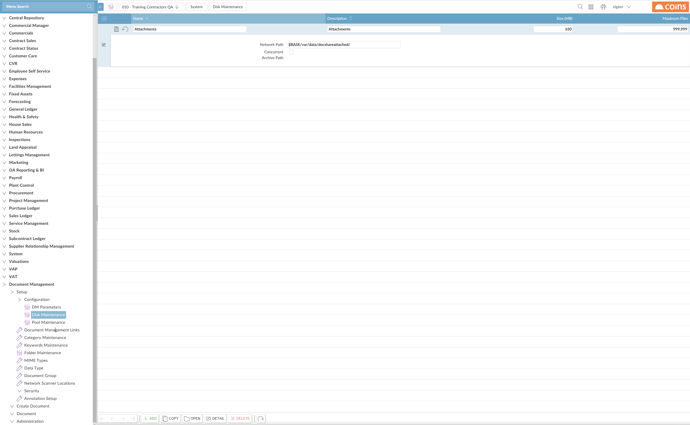
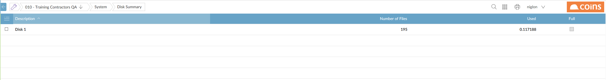

Disk Maintenance allows you to define the base directories within which Document Management creates disk directories.

You can either:
When you have to set up a disk directory, Document Management automatically creates subdirectories in which to store files with categories associated with the disk. You can limit the size of the subdirectories, so that the contents can be conveniently copied to a CD. When the contents of each subdirectory reach the maximum number of files or maximum size specified, Document Management creates a new subdirectory and begins to store files there.
You can see which subdirectories have been created by clicking the link in the Name column.
